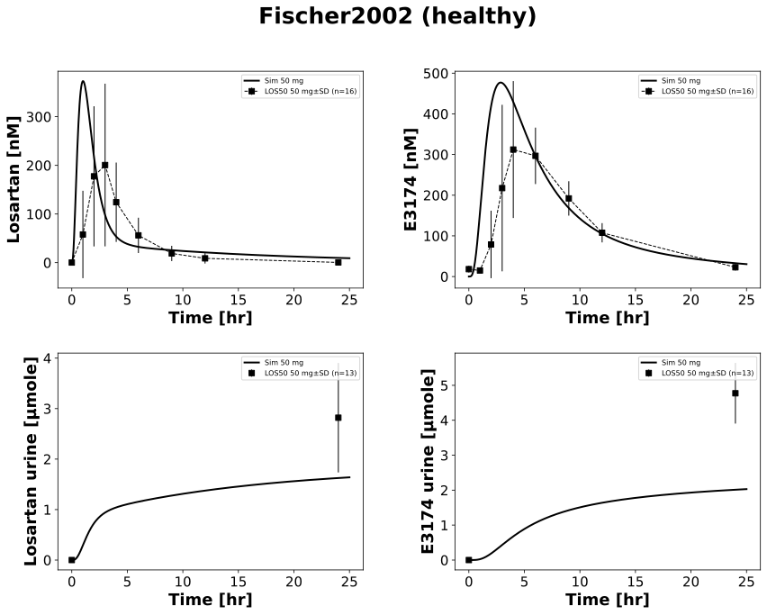

|  |
../../../../experiments/studies/fischer2002.py
from typing import Dict
from sbmlsim.data import DataSet, load_pkdb_dataframe
from sbmlsim.fit import FitMapping, FitData
from sbmlutils.console import console
from pkdb_models.models.losartan.experiments.base_experiment import (
LosartanSimulationExperiment,
)
from pkdb_models.models.losartan.experiments.metadata import (
Tissue, Route, Dosing, ApplicationForm, Health, \
Fasting, LosartanMappingMetaData, Coadministration, Genotype,
)
from sbmlsim.plot import Axis, Figure
from sbmlsim.simulation import Timecourse, TimecourseSim
from pkdb_models.models.losartan.helpers import run_experiments
class Fischer2002(LosartanSimulationExperiment):
"""Simulation experiment of Fischer2002."""
# FIXME: urinary data not implemented
interventions = [
"LOS50",
"LOS50_PHE4"
]
colors = {
"LOS50": "black",
"LOS50_PHE4": "tab:blue",
}
info = {
"[Cve_los]": "losartan",
"[Cve_e3174]": "exp3174",
"Aurine_los": "losartan_urine",
"Aurine_e3174": "exp3174_urine",
}
bodyweight = 72 # kg
def datasets(self) -> Dict[str, DataSet]:
dsets = {}
for fig_id in ["Fig1", "Fig2", "Tab2A"]:
df = load_pkdb_dataframe(f"{self.sid}_{fig_id}", data_path=self.data_path)
for label, df_label in df.groupby("label"):
dset = DataSet.from_df(df_label, self.ureg)
# unit conversion to mole/l
if fig_id in {"Fig1", "Fig2"}:
if label.startswith("losartan"):
dset.unit_conversion("mean", 1 / self.Mr.los)
elif label.startswith("exp3174"):
dset.unit_conversion("mean", 1 / self.Mr.e3174)
dsets[f"{label}"] = dset
# console.print(dsets)
# console.print(dsets.keys())
return dsets
def simulations(self) -> Dict[str, TimecourseSim]:
Q_ = self.Q_
tcsims = {}
tcsims[f"po_los50"] = TimecourseSim(
[Timecourse(
start=0,
end=25 * 60, # [min]
steps=500,
changes={
**self.default_changes(),
"BW": Q_(self.bodyweight, "kg"),
"PODOSE_los": Q_(50, "mg") * self.Mr.los/self.Mr.losp,
},
)]
)
# console.print(tcsims)
return tcsims
def fit_mappings(self) -> Dict[str, FitMapping]:
mappings = {}
for k, sid in enumerate(self.info):
name = self.info[sid]
for intervention in self.interventions:
coadministration = Coadministration.NONE
if "PHE" in intervention:
coadministration = Coadministration.PHENYTOIN
mappings[f"fm_po_los50_{name}_{intervention}"] = FitMapping(
self,
reference=FitData(
self,
dataset=f"{name}_{intervention}",
xid="time",
yid="mean",
yid_sd="mean_sd",
count="count",
),
observable=FitData(
self, task=f"task_po_los50", xid="time", yid=sid,
),
metadata=LosartanMappingMetaData(
tissue=Tissue.PLASMA,
route=Route.PO,
application_form=ApplicationForm.TABLET,
dosing=Dosing.SINGLE,
health=Health.HEALTHY,
fasting=Fasting.FASTED,
coadministration=coadministration,
genotype=Genotype.NR,
),
)
# console.print(mappings)
return mappings
def figures(self) -> Dict[str, Figure]:
return {
**self.fig1_2(),
}
def fig1_2(self) -> Dict[str, Figure]:
fig = Figure(
experiment=self,
sid="Fig1_2",
num_rows=2,
num_cols=2,
name=f"{self.__class__.__name__} (healthy)",
)
plots = fig.create_plots(
xaxis=Axis(self.label_time, unit=self.unit_time), legend=True
)
plots[0].set_yaxis(self.label_los, unit=self.unit_los)
plots[1].set_yaxis(self.label_e3174, unit=self.unit_e3174)
plots[2].set_yaxis(self.label_los_urine, unit=self.unit_los_urine)
plots[3].set_yaxis(self.label_e3174_urine, unit=self.unit_e3174_urine)
for k, sid in enumerate(self.info):
name = self.info[sid]
# simulation
plots[k].add_data(
task=f"task_po_los50",
xid="time",
yid=sid,
label=f"Sim 50 mg",
color="black",
)
for intervention in self.interventions:
if "PHE" in intervention:
continue
# data
plots[k].add_data(
dataset=f"{name}_{intervention}",
xid="time",
yid="mean",
yid_sd="mean_sd",
count="count",
label=f"{intervention} 50 mg",
color=self.colors[intervention],
linestyle="" if "urine" in sid else "--",
)
return {
fig.sid: fig,
}
if __name__ == "__main__":
run_experiments(Fischer2002, output_dir=Fischer2002.__name__)
{kind=link}